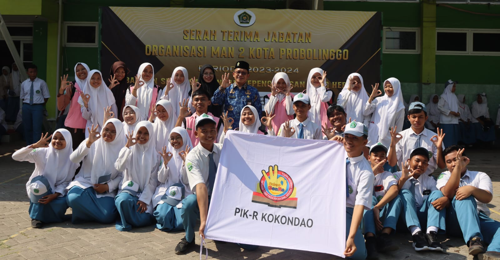

ABOUT
PIK-R adalah singkatan dari Pusat Informasi dan Konseling Remaja dan menjadi suatu
wadah kegiatan program PKBR (Penyiapan Kehidupan Berkeluarga Bagi Remaja) yang dikelola dari, oleh dan
untuk remaja guna
memberikan pelayanan informasi dan konseling kesehatan reproduksi serta penyiapan kehidupan berkeluarga.
VISI
Mewujudkan generasi remaja yang sehat dan bertanggung jawab serta berkulitas secara akademis dan
psikologis dengan mengedepankan akhak yang mulia
MISI
Menjadi pusat informasi dan pelayanan konseling mengenai TRIAD KRR (Seksualitas, HIV/AIDS, dan Napza).
Menjadi pusat informasi dan pelayanan konseling mengenai kesehatan fisik dan psikis remaja.
Menjadi fasilitator dalam penyampaian masalah remaja dengan memberikan solusi terbaik.
Memberikan sosialisasi mengenai bahaya HIV/AIDS, Napza dan Kenakalan Remaja.
Meningkatkan pola perilaku hidup sehat dan berkualitas terhadap remaja.
Memberikan pembekalan kepada remaja mengenai kecakapan hidup (life skill) dengan berbagai
pelatihan keterampilan.
PROGRAM KERJA
Program Kerja merupakan susunan rencana kegiatan kerja yang telah dirancang dan telah disepakati
bersama
untuk dilaksanakan dalam jangka waktu tertentu. PIK-R KOKONDAO memiliki beberapa PROKER
namun PROKER PIK-R yang utama, diantaranya
Mengadakan konseling untuk seluruh siswa/i MAN 2 Kota Probolinggo.
Melakukan sosialisasi yang berhubungan dengan remaja untuk seluruh siswa/i MAN 2 Kota Probolinggo.
Mengadakan kegiatan rutin bersama disetiap minggunya.